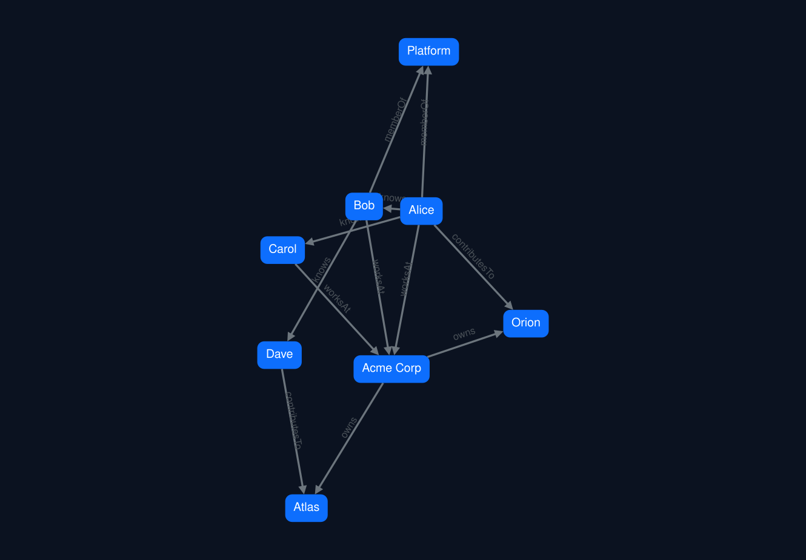
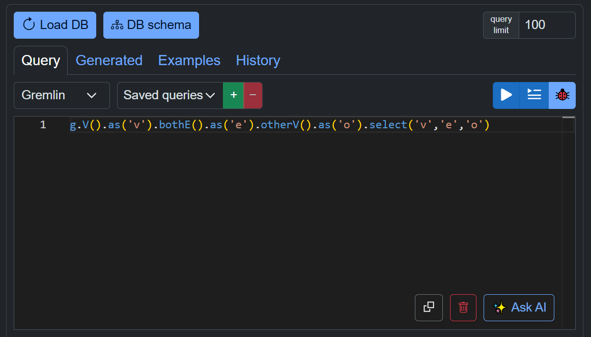
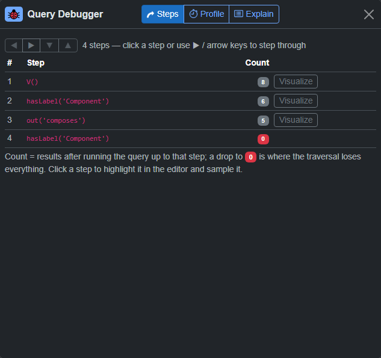

Connect to Gremlin, openCypher or SPARQL, run a query, and see your data as an interactive 2D or 3D graph, a table, or raw JSON — edit it and commit changes back, or generate a whole graph from text with AI.
Runs entirely in your browser — nothing to install to try it, and your queries and connections never leave your machine.
One page, no install. Connect, query, visualize, debug and edit — then export the result.
Talk to your database with no proxy in between.
A vendored Monaco editor that knows your graph.
Flip any result between views instantly.
gdotV-style step-through for Gremlin.
Mutations are staged and committed on your word.
Bring data in, take pictures out.
Every result is one click away from four representations, with a search box and per-label filter in both graph views. Style each vertex label with its own colour, size, display property and icon.

A self-hosted Monaco editor highlights Gremlin, openCypher and SPARQL, auto-closes brackets and quotes, and completes real vertex labels, edge labels and property keys pulled live from your database.

Paste notes, drop in a Word, Excel or CSV file, or name a Wikipedia article — an AI model extracts the entities and relationships and draws them, ready to review before anything is saved.
Bring your own model — Anthropic, OpenAI, Gemini or any OpenAI-compatible server. The app asks for strict JSON, cleans it up (merging “Acme” and “Acme Inc.” into one node), and previews the counts, labels and every repair before you accept. Then merge it into your drawing or replace it — and write to a database only when you say so.
The step debugger re-runs your query truncated at each step and shows how many traversers survive — so a query that returns nothing stops being a mystery.

Each step shows the traverser count; the red zero is where every result was dropped — click any step to visualize that intermediate result in 2D or 3D.
Anything reachable from your browser over WebSocket or HTTP (with CORS) works — no server component required.
| Database | Protocol | Status |
|---|---|---|
| Apache TinkerPop / TinkerGraph | Gremlin over WebSocket or HTTP | ✔ Supported |
| Azure Cosmos DB (Gremlin API) | Gremlin + HMAC-SHA256 | ✔ Supported |
| Fuseki · Blazegraph · GraphDB · Virtuoso | SPARQL 1.1 over HTTP | ✔ Supported |
| Wikidata · DBpedia (public) | SPARQL over HTTPS | ✔ Supported |
| Neo4j · Memgraph · ArangoDB · Dgraph | Cypher / AQL / DQL | ◷ On the roadmap |
Nothing to install — open the live demo and load a built-in sample graph or paste a Mermaid diagram. Prefer to run your own? It's a static Blazor WebAssembly app: clone the repo and start the dev server.